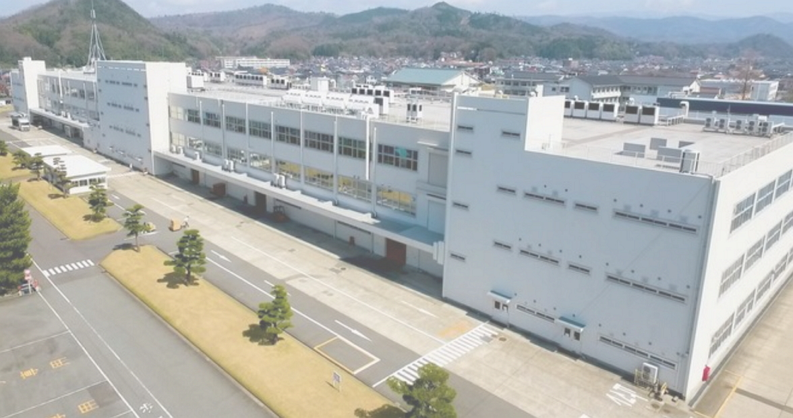
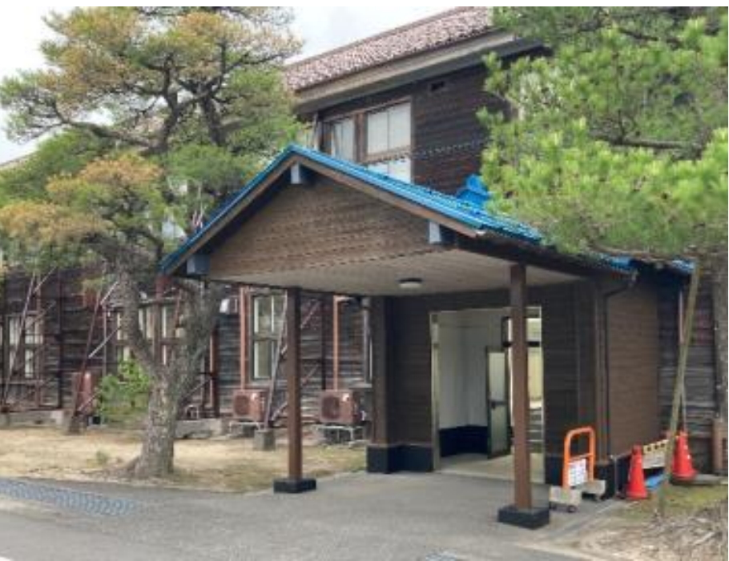
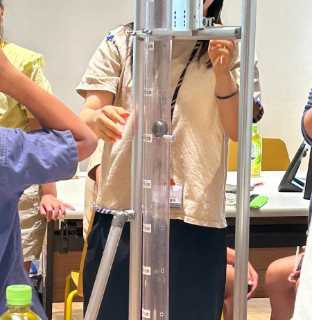
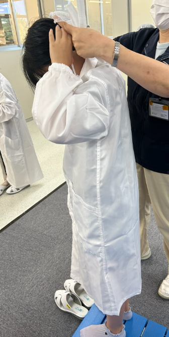

研究のきっかけ (体験ツアーに参加しようとおもったわけ)
鳥取県教育委員会主催のお仕事体験ツアーの募集の広告を見て
自分の知らない事を知りたかったからです。
親子でお仕事体験ツアー
倉信 美空
鳥取県教育委員会主催のお仕事体験ツアーの募集の広告を見て
自分の知らない事を知りたかったからです。
LIMNOとは、
LIM: リミット NO: ノー の意味で、「リミットはない、限界はない」の想いでつけられたそうです。
会社には働いている人が 500人いるそうです。
三洋からパナソニックになり2023年にLIMNOが誕生しました。
敷地内に入ると、木造の建物があります。
歩兵40連隊兵舎(ほへい40れんたいへいしゃ) という建物があり、今は V.co-lab
(ビジョナリー・コラボレーションセンター)となり活用されています。
V.co-labは、通しょうラボと呼ばれていて、会社の人だけではなく地域の人とも使われて交流の場になっています。
LIMNOでは、いろいろな製品が作られていますが
タブレットは日本メーカー１位です。
(マイクロソフト、アップル、レノボと並ぶそうです)
進研ゼミのタブレットや、ジョイサウンドのカラオケ用タブレットが作られています。
ジョイサウンドのカラオケ用タブレットでは、壊れにくいものを作ってほしいと要望があったそうで、
頑丈なタブレットを作る為、いろいろと調査したりみんなで研究したそうです。
注文から出荷までは 1～7までの順番で作業しています。
１、仕様 (どういったものを作るか決める)
２、設計・開発 (どういった形にしていくか、作っていってみよう)
３、部品選定 (どこの部品を使うか決めよう)
４、組立 (組み立ててみよう)
５、検査 (ちゃんと動くかの検査)
６、こんぽう (お店やお客に送るために包装しよう)
７、出荷 (お店やお客さんの所に届けよう)
タブレットを作るばかりではなく、アプリケーションも作っているそうです。
認知症の早期発見・認知症予防アプリの開発もしています。
今年の2月には、ワイヤレス給電送信機を作ったそうです。
ワイヤレス給電送信機というのは、コンセントにつながっていないのに電気を流せる、無線式の電源です。
電源をワイヤレス化にできるのはすごいです。
会社の中を見学させてもらいました。
初めはイミュニティー試験
>> 静電気で壊れないか検査します。
次は「こうおんそう」
>>低温(-30℃)から高温(140℃)まで、いろいろな熱の試験をします。
次は耐久試験
>>ハーネスの折り曲げ、タッチの反応とか細かな検査をして長く使えるか確認します。
次に「しん動」テスト & 落下試験
>>いろいろな角度で落下させたり、細かなしん動を送って、ものが壊れないか確認します。
(LIMNOでは重たい鉄球を80cmの高さから画面に落とすテストもしています）
組立ラインの見学
>>静電防止の白衣と帽子を被って組立る現場を見に行きました。
小さい部品もあり、沢山の部品で作っているのを見てビックリしました。
何度も見直してから出していました。
何度も検査して調整していました。
社員の方々に、いろんな話がきけました。
企業秘密だから写真がとれなかったのが残念です。
LIMNO
V.co-lab
鉄球を落とすところ
静電防止服を着ている所です
